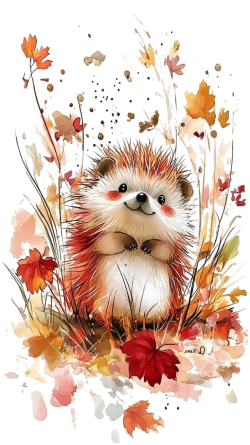
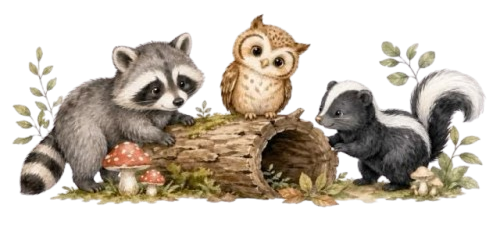
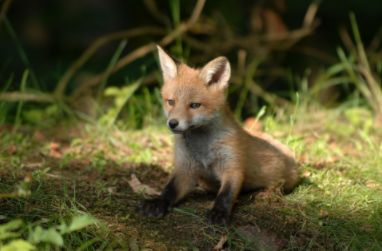
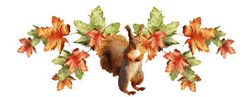

Publié le 10/09/2026


En France, la nouvelle liste des espèces susceptibles d’occasionner des dégâts, les fameuses ESOD, a relancé le débat sur la notion de "nuisible".
En Belgique, il n’existe pas de liste nationale équivalente. La gestion de la faune relève principalement des Régions.
Un même animal peut donc être protégé à Bruxelles, soumis à certaines mesures en Wallonie et bénéficier encore d’un autre régime en Flandre..
Le mot "nuisible" mérite d’ailleurs d’être manié avec précaution.
La réglementation distingue les espèces protégées, les espèces de gibier, celles dont la destruction peut être autorisée dans certaines circonstances et les espèces exotiques envahissantes.
Autrement dit, l’animal qui pose problème dans un jardin n’est pas nécessairement un animal que l’on peut éliminer.
Et c’est là que commence notre petit tour de Belgique.
Des parcs bruxellois aux forêts ardennaises, en passant par les campagnes wallonnes, nos "voisins les nuisibles" ne sont finalement pas si nuisibles que cela.
Impossible de parler de ces animaux sans commencer par le renard. Sa silhouette rousse appartient depuis longtemps aux paysages de nos campagnes, même si l’animal s’aventure de plus en plus aux portes des villes. Pourtant, son statut varie fortement d’une région à l’autre. À Bruxelles, où la chasse est interdite depuis 1991, le renard est protégé. Il est notamment considéré comme un acteur de la biodiversité et un régulateur des populations de petits rongeurs comme le rat qui prolifère dans certains quartiers. En Wallonie, le décor juridique change : le renard n’est pas protégé et sa chasse ou sa destruction sont possibles dans certaines conditions, y compris toute l’année. Mais derrière l’image du prédateur rôdant près des poubelles, le renard joue aussi un rôle écologique. Il se nourrit notamment de petits rongeurs. Une étude menée aux Pays-Bas a ainsi observé moins de larves et de nymphes de tiques dans des zones boisées où les renards étaient davantage présents. Cela ne suffit pas à établir à lui seul une relation de cause à effet, mais rappelle que chaque espèce occupe une place dans un écosystème.
✦✦✦
